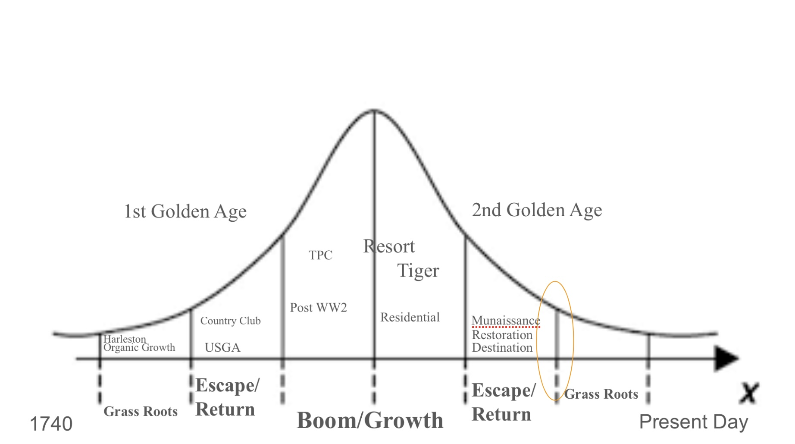

Deconstruction and Return to Roots
January 14, 2025
It was gameday. Amongst the waves of scarlet and gray, I found myself on the porch of our fraternity satellite house talking with a buddy's dad. He went to Ohio State, so I was curious to hear the similarities and differences from his experience compared to ours.
He responded, "Clothes and phones. It doesn't seem like women wear clothes anymore and people are always on their phones. It's crazy. Besides that it's about the same."
I asked, "Do you think it'll continue to be that way?"
"No, it's going to go backwards, everything happens on a curve."
At the time, I was a senior in college in the heat of operations management classes thinking about how to find myself on a golf course everyday post grad. Golf course architecture was what I found most fascinating at this point in my life. I had read about every Fried Egg article available online, dove into the dense pieces on Golf Club Atlas, and loved reading Jim Hartsell's and Tom Coyne's books.
In operations management classes we used a normal distribution. The model is shaped like a bell curve with symmetrical data on either side of absolute zero. Given my buddy's dad's comment on college trends, I was curious to see how the model could be applied to golf.
I am no theorist but I have spent hundreds, if not thousands, of hours raking bunkers in work boots or a caddie bib wondering what makes this game tick , and ultimately what is next to come. This uses the framework of a normal distribution. The mean and stdev are replaced with a timeline. The timeline is a framework as well, as it doesn't signify hard starts and stops. Lastly one can picture the areas typically assigned for st devs with a coefficient of .8 as there are overlaps and outliers in time periods. Let's dive in.

Grass Roots
Golf, at its inception, lacked formal structure. Boxes with equipment arrived from Scotland at Charles Town Harbor in 1739. Golf began as a simple activity: sticks, balls , just explore and play. Throughout the 18th century at Harleston Green, there were no tee times or flagsticks. A group of men played in an open green space in between Calhoun and Beaufain Street in Charleston, SC. Without a formal clubhouse, they followed their round at Williams Coffee House. From these informal beginnings, the game underwent organic growth in the United States.
The standard 18-hole course didn't appear overnight , its development was an iterative process. St. Andrews in Yonkers started with just four holes in 1888 but expanded to 18 by 1897. Similarly, the Edgewood Club in New York began in 1884 with 14 acres and two holes. By 1909, it had grown to 26 acres and seven holes, and by 1916, it featured nine holes.
This period was characterized by experimentation. Instead of adhering to a predetermined design plan, courses evolved incrementally, allowing for adjustments and new ideas to shape the game's development.
Escape / Return
The First Golden Age
Towards the turn of the 19th century, 18 holes became the standard. During this time there was an emphasis on escaping the city. The country club model, first introduced at Chicago Golf, was the first example where people left the urban feel for a respite in the rural area. At the time, Chicago's population was well over one million, prompting golfers to establish their course in Downers Grove, a small town with only a few thousand. Similarly, the players from Harleston Green gradually moved to areas near the Cooper River and later the Ashley River, where the Country Club of Charleston stands today.
During this time the USGA entered the scene where they streamlined championships, created official rules, and encouraged more amateur golf. Now that golf clubs from the city wanted country clubs, golf professions emerged. A new wave of pros and architects emerged that emphasized design principles from Scotland. Donald Ross introduced the concept of short grass around the green (fringe) from his time at Royal Dornoch, then at Pinehurst. C.B. MacDonald modeled holes from the best courses of Scotland that can be seen in his template holes.
The Second Golden Age
Fast forward to the turn of the 20th century and we see an effort to escape the country club and resort model for a more elusive, adventurous, and pure experience through destination golf. Sand Hills, Dream Golf (Bandon, Sand, etc.), and many more showed how golf could get further out, into remote areas with an emphasis on enthralling terrain. Design principles were modeled off of those from Scotland and Ireland. Many of the courses were built on sand and designed to make the course blend in naturally with the environment, rather than creating an artificial look.
This destination model competed with pre-existing country clubs. Avid golfers could have a remarkable destination experience multiple times a year for a fraction of member dues. This emphasis on design principles and desire for pure golf created a demand for architects that could accomplish this in their hometown.
Country club restorations have become popular, reverting a course back to its intended state. Over time golf courses lose their character and could use some TLC. These projects have been occurring since the 1970s at big name clubs such as Augusta, Palmetto, etc., but there has been a new spike in the 21st century. The Country Club of Charleston underwent one in 2006 and a major one from 2016 to 2018. The goal is to give players the opportunity to play the design the architect intended.
Boom
Golf underwent a boom in the 50s and 60s. WW2 soldiers wanted a game that would provide competition so accessible courses were created for "the common man."
Championship golf became more widespread. Pete Dye was the leading visionary. He planned for distance increases so he designed courses (a lot of TPC) that the PGA Tour would be able to use for decades to come. Those courses considered the spectator for championships, allotting a large amount of viewing space.
Resorts sprouted in the late 20th century combining dining, spas, golf, tennis, and other activities. Throughout the late 20th century and into the days of the Tiger Boom, real estate was tied in with course development. RTJ introduced the concept of tying golf to real estate opportunities. The residential golf community became even more commonplace in and around Tiger's heyday of the late 1990s.
While there was a lot of golf being created, the spirit of the game diminished because of the natural emphasis on real estate development, overall accessibility, and catering to the professional tour. We see a more authentic golf course experience reappear with The Second Golden Age.
Transition Period
Will all of the noteworthy golden age country clubs undergo a massive restoration? Will there ever be an over saturation of destination resorts? The trends of the 2nd Golden Age can't continue at the frequency they have been on. The development trend post COVID has been insane, we are due for a downtick.
We're in the early stages of transition between The 2nd Golden Age and another Grass Roots era. This grass roots era isn't defined by the organic growing pains that occurred in the 18th and 19th centuries. Given the current technology, it can be characterized as a decomposition of constructs allowing for hyper-creativity. Notable indicators are recent additions to professional golf, increasing development of tech and sims, media companies and communities, the scorecard, the reutilization of existing properties, and an increasing wave of turf gardens.
Professional Golf
The fans want a party, and LIV delivers. They want a new form of competition, and TGL steps up. Sure, some of the tradition's been lost to give the fans what they want, but in the end, the directors and commissioners know exactly what the people are after and do a solid job of giving it to them.
Simulators
Topgolf brought technology into golf in the early 2000s, merging the sport with food and drinks. Simulators are now doing something similar, but right in the heart of cities instead of on the outskirts.
Golf leagues become more accessible and manageable too.
Communities + Apparel Companies
No Laying Up kicked off a revolution that changed the game's vibe. On-course behavior got more relaxed, the dress code followed suit, and one could become viral by playing golf. They proved that authenticity sells in providing golfers a more widespread community.
Some of these communities are contributing to the ethos of overseas private club accessibility by acting as a medium for non member play through their events. Lastly, everyone , from YouTube creators to regular people , can throw a logo on something and bring it to the marketplace in an effort to build a community.
The Scorecard
Since the country club model, there have been routine standards as far as the number of holes and what the course considers "par." We find 18-hole, or 9-hole courses, and anywhere from par 70 to 72 being the constant. Sure there are outliers within the country like Wannamoiset but 70 to 72 has been pretty typical.
Dream Golf has been experimenting with this over the past two decades. They have left the typical number of holes which is seen through their short courses. The Preserve has 13 holes, The Sandbox has 17, and Shorty's has 19. I find this interesting because the routine concept of score is tweaked. There is no front or back 9 , so measuring success appears different mentally.
Along with that, there are courses that stray outside of par 70 to 72. Mammoth Dunes is a par 73 and Sedge Valley is a par 68. Rather than forcing a construct into a piece of property, new ideas can be experimented with or land could be used to its fullest extent.
The Reutilization of Properties
The reutilization of property to fit a given environment is also a theme we have seen in the past decade.
In addition to a Raynor restoration, Charleston Muni added specific short game areas for youth programming while maintaining the accessibility of accessible golf.
3s in Greenville was an 18-hole par-3 course. In 2020 it turned into a 12-hole par-3 course, an 18-hole putting green, and short game area with a focus on entertainment and hospitality.
The Park outside of West Palm went from a rundown 18-hole course to a spruced up Gil Hanse design with a 9-hole par-3 course. Additionally, there is an area for dining, youth education, and a large putting course.
These locations are just a few examples. Courses are expanding their audience by creating multiple different attraction points for those at all stages in golf. It shows how the strictly 18-hole method is outdated and a more customized plan is favorable.
Turf Gardens
A golf course is a farm of turf. A lot of people don't like to farm but they do like to garden. Here are some prevalent backyard golf courses , some natural, some artificial.
Brough Creek is a 7-hole design outside of Kansas City across 3 acres. Two former buddies raised $15k through GoFundMe to create a community built golf course.
Spud Run is a 9-hole course in Southern Ohio with 1 green and 9 different tee boxes. After retirement Jeremy created this in his backyard and has created a YouTube to document his journey and events. He estimates that it would take $20 to $25k to replicate this USGA green and regulation fairway.
Noah Farms Golf, located in Red Oak, OK, has no green fees. Its main intention is to promote junior golf. The owner also holds annual tournaments for adults as well as juniors.
Under Par Acres boasts a tee box, fairway, green, and bunker. It is a family project where a father has documented the journey of the course along with his son's swing.
Bigfoot Pitch and Putt , one artificial green with ridiculous pins in the mountains of NC. Multiple tee boxes placed around the property deep in the woods.
Down The Road
Andy Johnson of The Fried Egg poses the question of whether golf will be more technology or sustainability based in the future.
I think they'll complement each other. I'm not much of a tech guy but here are some thoughts on the sustainability piece.
Given the accessibility and ease that technology has allowed, I wonder if it will cause an adverse reaction in the other direction. Will people in golf ever want a gritty experience? I'm thinking back to the inception where people were building courses in a sustainable fashion. There already is a desire for community in golf, ability to grow turf locally, and the deconstruction of ever existing models to where this can adapt to any local population and land size. Could the experience of playing regulation and pristine courses be put on the back burner for a community building project to emerge? I could even see it becoming a business model where people get to experience what it's like to design a golf course. Then it could also turn into a retreat, a men's group, a workout.
Additionally I can see more golf courses being used for more non-golf events. Church and campouts come to mind, as if they're not the same.
← Back to Writings